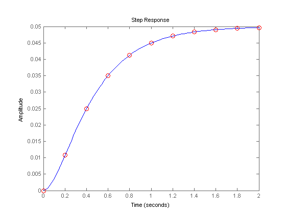
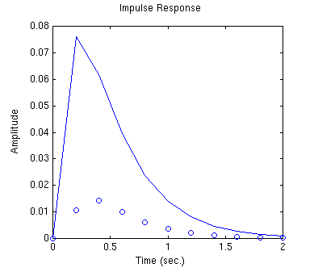
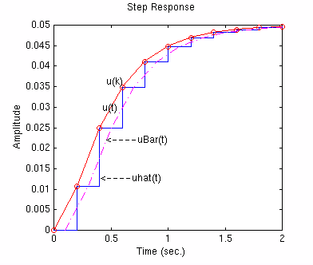

Extras: Lagging Effect Associated with a Hold
It should be noted that the single most important impact of implementing a control system digitally is the lagging effect associated with the hold. First, copy the following commands to an m-file and run it in the MATLAB command window.
s = tf('s'); sys = 1/(s^2+10*s+20); Ts=0.2; sys_d = c2d(sys,Ts); step(sys,2) %plots continuous output response hold on [x,t]=step(sys_d,2); plot(t,x,'ro') %plots discrete output response hold off
From this plot, we see that the discrete response exactly matches the continuous response at each instant of sampling time. This is true because the input was a piecewise constant step function. Had the input been a continuously time-varying function, it would not have matched exactly with the continuous response. This can be seen by changing the input of the same system from the example above from a step to an impulse. In the above m-file, change the step command to an impulse command. Re-running this m-file will generate the following plot.

From this plot, you see the discrete output does not match the continuous output. The discrete response lags behind the continuous response over a certain range of time.
Even if the discrete response matches the continuous response at the sample times, as shown in the following figure,

the average signal uBar(t) lags the continuous signal u(t) by Ts/2 seconds. However, if you decrease the sampling time (Ts, in sec/sample), this lagging effect becomes smaller and uBar(t) will more closely match the continuous signal u(t).